Manual Notes
This is a recap of fundamental game info in the manual. It assumes a basic knowledge of central FRC concepts. These include but are not limited to:
- Autonomous, Teleoperated, and Endgame phases
- Alliances, Alliance Areas, and the Starting Line
- Fouls, tech fouls, and yellow and red cards
If you are not familiar with these concepts, please instead read the manual or ask a team mentor.
Manual link
Livestream Link
Field Layout
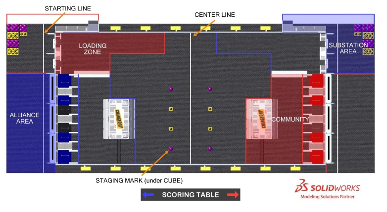
All labels are explained in the following section.
Game Objects and Concepts
Game Piece
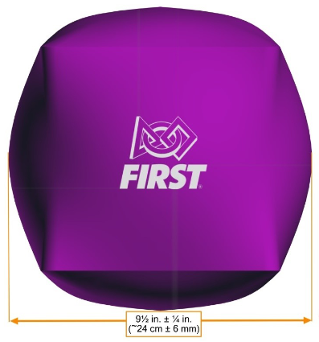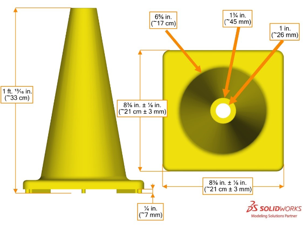
A purple inflatable cube or a yellow traffic cone.
- 54 cones, 44 cubes (27/22 for each team) in total
- One cone or cube can be preloaded into a robot
- Only one Game Piece can be carried at a time
- Most pieces are in human player station (see Staging Mark and Substation)
- Game Pieces are to be placed in one of two spots on the Grid
- Cubes can be inflated to proper spec with the jig included in the kit of parts
- Don't grab Game Piece cubes too hard! Popping a cube during a match is a tech foul
Staging Mark
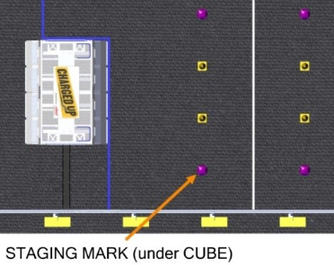
A field mark where Game Pieces are set before the game
- Four on each side
- Teams may decide which marks get cubes and cones
- If no decision, cubes are outer two, cones are inner two
Center Line
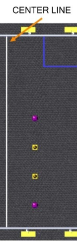
A field mark that bisects the field.
- Robots cannot go on the other team's side during Autonomous
Charge Station
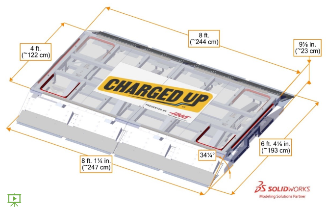
Field Tour Video
A balancing platform that is used twice in a match. More info in the "Game Procedure" section.
- See-saw action when robots drive on ramps
- Degrees when the platform is tilted:
- On-ramp: 11 degrees
- Platform: 15 degrees
- "Disabled" ramp: 71.5 degrees
- Lights up when level (red marks in picture)
- Level = 2.5 degrees of actually being level
- Game Pieces are designed to not impede Charge Station function
Docked robot
A robot that is only contacting the Charge Station and/or other objects fully supported by the Charge Station.
Engaged robot
A robot that is docked while:
- All other robots touching the Charge Station are also docked
- The Charge Station is level
The two terms above are relevant in the "Game Procedure" section.
Grid
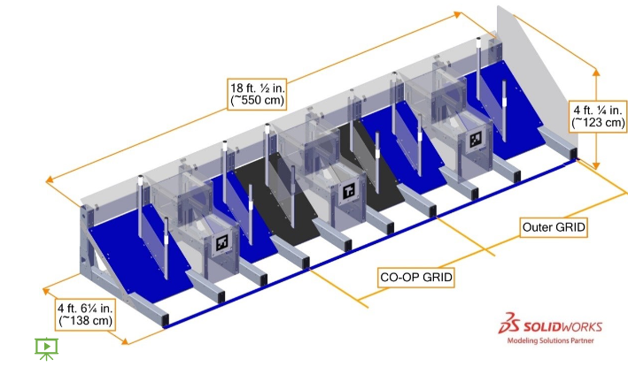
Field Tour Video
A scoring area.
- Both sides have three Grids
- Outer two are team Grids, inner Grid is the Co-op Grid (relevant for scoring)
- Each grid contains nine nodes (explained below) to score on
Node
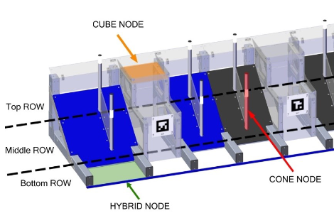
A scoring rod or platform on the Grid.
- Three types: cube (platform), cone (rod), hybrid (floor)
- Each Grid contains nine Nodes: two levels of cone-cube-cone Nodes (high, middle) and one level of three hybrid Nodes (low)
- Placing a cube on a platform, hooking a cone on a rod, or placing either on a hybrid Node earns your alliance points
Link
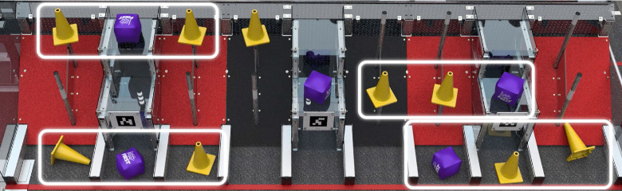
Three filled Nodes in a row.
- Awards extra points
- Four in a row is not two Links
Community
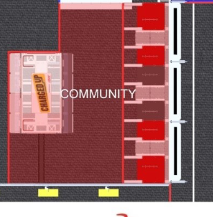
A "safe zone" of sorts for each team.
- Contains Grid, Charge Station, and four Staging Marks with Game Pieces
- Robots can start anywhere in their Community except the Charging Station
- Teams are given a foul if their robot touches an opposing robot in its Community
Substation
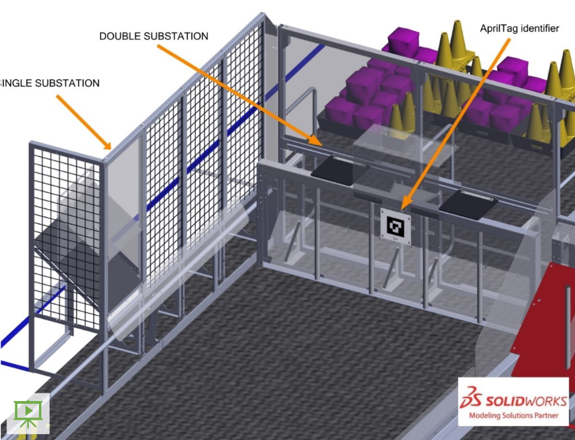
Field Tour Video
The area where human players give Game Pieces beyond the four on the Staging Marks to robots. May seem familiar if you played Rapid React.
- Max of three human players
- Either a Single Substation or a Double Substation
- Single Substation is a single chute
- Double Substations contain moving shelves and a drop onto a slope
- Game Pieces can be grabbed from a shelf or from the floor
- Each Substation contains a Portal where human players insert Game Pieces
Loading Zone
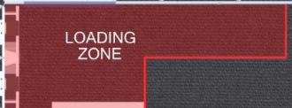
The area where robots go to receive Game Pieces from human players.
- Contains one Double Substation and one Single Substation
- An alliance's Loading Zone is on the opposite side of their Alliance Area
- Teams are given a foul if their robot touches an opposing robot in its Loading Zone
- Technicians: do not trip on the barrier that separates the Community and Loading Zone
Other videos on the FRC 2023 playlist:
Alliance Area
Cube Measuring Jig (For proper inflation of Game Piece cubes)
Game Procedure
Autonomous (Auto)
- Start in chosen location in Community
- Leave Community
- Receive points and score extra points
- Dock and/or engage with Charge Station
Teleoperated (Teleop)
- Receive Game Pieces and score points
- If a piece scored in Auto is removed, its points are removed. If it is put back, the Auto points are given back
Endgame
- Dock and/or engage with Charge Station
Back to Pages Home